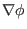
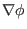
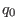
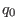

Next: Numerical verification of the Up: Visualization of field-line-following coordinates Previous: contours in a toroidal
The fact
implies that  is
constant along a magnetic field line. At first glance, a magnetic line on an
irrational surface seems to sample all the points on the surface. This seems
to indicate that
is
constant along a magnetic field line. At first glance, a magnetic line on an
irrational surface seems to sample all the points on the surface. This seems
to indicate that  is a flux surface label for irrational surface.
However,
is a flux surface label for irrational surface.
However,  must be a non-flux-surface-function so that it can provide a
suitable toroidal coordinate. I had once been confused by this conflict for a
long time. The key point to resolve this confusion is to realize that it is
wrong to say there is only one magnetic line on an irrational surface, i.e. it
is wrong to say a magnetic line on an irrational surface samples all the
points on the surface. There are still infinite number of magnetic field lines
that can not be connected with each other on an irrational surface. Then the
fact
does not imply that
must be a non-flux-surface-function so that it can provide a
suitable toroidal coordinate. I had once been confused by this conflict for a
long time. The key point to resolve this confusion is to realize that it is
wrong to say there is only one magnetic line on an irrational surface, i.e. it
is wrong to say a magnetic line on an irrational surface samples all the
points on the surface. There are still infinite number of magnetic field lines
that can not be connected with each other on an irrational surface. Then the
fact
does not imply that  must be
the same on these different magnetic field lines. In fact, although
, the gradient of
must be
the same on these different magnetic field lines. In fact, although
, the gradient of  on a
flux-surface along the perpendicular (to
on a
flux-surface along the perpendicular (to
 ) direction is nonzero,
i.e.,
) direction is nonzero,
i.e.,
 . [Proof:
. [Proof:
| (303) |
In
 coordinates,
 is perpendicular to
coordinates,
 is perpendicular to
 . However, in field-line-following coordinates
. However, in field-line-following coordinates
 ,
is not perpendicular to
,
is not perpendicular to
 . [Proof:
. [Proof:
| (304) |
(In GEM code, the radial coordinate  is chosen to be the minor radius
is chosen to be the minor radius
 of magnetic surfaces on the low-field-side of the midplane, and the
field-aligned coordinates
of magnetic surfaces on the low-field-side of the midplane, and the
field-aligned coordinates  used in the code are defined by
, and
, where and
used in the code are defined by
, and
, where and  are constant quantities of length dimension,  is a dimensionless
constant.)
are constant quantities of length dimension,  is a dimensionless
constant.)
(check** may be wrong, In the practical use of the field-aligned
coordinates, the  coordinate, which is along the magnetic field line,
can not be infinite, i.e., we can not follow a magnetic field for infinite
distance. It must be truncated into a finite interval.
coordinate, which is along the magnetic field line,
can not be infinite, i.e., we can not follow a magnetic field for infinite
distance. It must be truncated into a finite interval.
[check** may be wrong. **Next, I explain the practical use of the field-aligned coordinates in the flux-tube turbulence simulations. The flux-tube means a region that is in the vicinity of a magnetic line and follows the magnetic field line. On every magnetic surface, we follow the magnetic field line for a distance longer than the , where is the smallest parallel wave number included in the simulation.
**may be wrong** check**The perpendicular width of the flux-tube is
determined by the width of  coordinate, which is chosen so that the
perpendicular width of the flux tube on a magnetic surface is much larger than
the perpendicular wavelength of the turbulence. Then we can use the periodic
condition at
and
where
is the width of
coordinate, which is chosen so that the
perpendicular width of the flux tube on a magnetic surface is much larger than
the perpendicular wavelength of the turbulence. Then we can use the periodic
condition at
and
where
is the width of  coordinate chosen by
us. The radial range of the flux tube is chosen to be much larger than the
largest radial wave-length of the turbulence. The radial profiles of all the
equilibrium quantities are assumed to be constant and the effects of the
radial gradient of the equilibrium quantities enter the model through the
drive terms in the gyro-kinetic equation.**]
coordinate chosen by
us. The radial range of the flux tube is chosen to be much larger than the
largest radial wave-length of the turbulence. The radial profiles of all the
equilibrium quantities are assumed to be constant and the effects of the
radial gradient of the equilibrium quantities enter the model through the
drive terms in the gyro-kinetic equation.**]
By the way, note that , i.e., the magnetic field lines are straight with zero slope on plane.
|
|
|
|
yj 2018-03-09